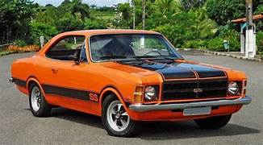
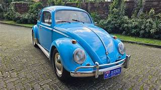
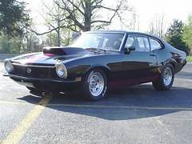
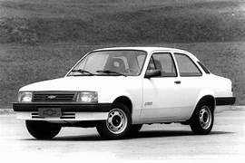
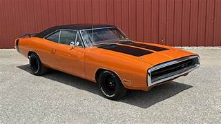

O Chevrolet Opala 1968 foi o primeiro modelo da linha Opala lançado no Brasil pela Chevrolet, sendo apresentado oficialmente no Salão do Automóvel de São Paulo 1968. Inspirado em modelos europeus da Opel e americanos da GM, ele marcou o início dos carros de passeio modernos da marca no país.

O Volkswagen Fusca 1960 é um dos carros mais icônicos da história, produzido pela Volkswagen. Ele faz parte da primeira geração do Fusca, um modelo originalmente desenvolvido na Alemanha e que se popularizou no mundo todo, inclusive no Brasil.

O Ford Maverick 1970 foi um carro lançado pela Ford nos Estados Unidos como um modelo compacto, pensado para ser econômico e acessível.

O Chevrolet Chevette 1993 foi um dos últimos anos de produção desse modelo no Brasil, fabricado pela Chevrolet. Ele era um carro compacto e econômico, bastante popular no país.

O Charger 1970 ficou conhecido pelo alto desempenho e estilo esportivo, sendo até hoje um dos carros clássicos mais desejados por colecionadores.